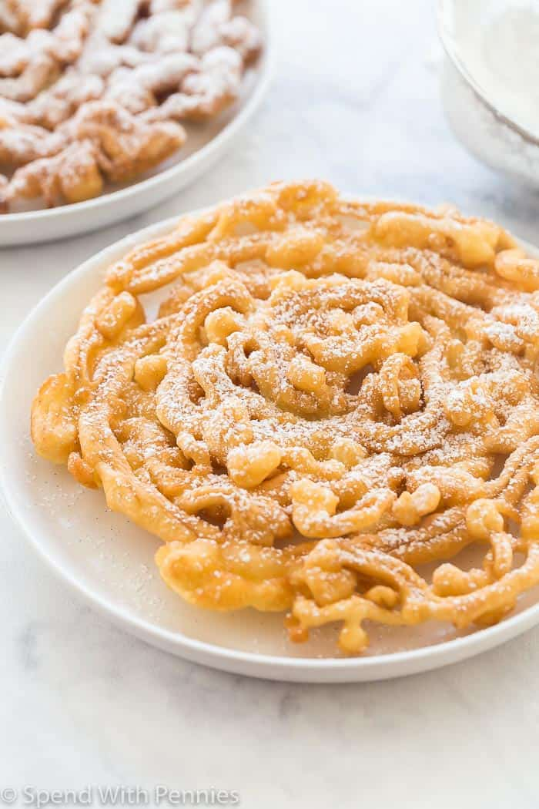

Funnel Cake Recipe

Home made home style funnel cake.
Tastes just like being at the fair.
Best funnel cake that my kids have ever eaten.
With only half the cost of a fair funnel cake.
Ingredients:
- ¼ cup milk
- 1 egg
- 1 tablespoon water
- ½ teaspoon vanilla extract
- 1 tablespoon granulated sugar
- ¾ teaspoon baking powder
- 1 pinch salt
- ½ cup all purpose flour
- 4 Tablespoons powdered sugar
Directions:
- In a large liquid measuring cup or batter bowl with a spout, whisk together milk, egg, water and vanilla.
- Add sugar, baking powder and salt and whisk until combined.
- Add the flour, and whisk until completely smooth. Set aside.
- In a medium, deep-sided pan or pot, heat 1" of oil to 375°F over medium-high heat. When you put the end of a wooden spoon in the pot and bubbles form around the spoon, it's ready. Reduce heat to medium.
- Drizzle batter from cup in a thin line, swirling around the pan and overlapping as desired. Cook for 2 minutes or until light golden brown, then flip and cook another 2 minutes or until golden brown.
- Dust with 2 tablespoons powdered sugar and serve. Repeat one more time with the remaining batter.
- Return to Top Page
- Return to Odin Recipes